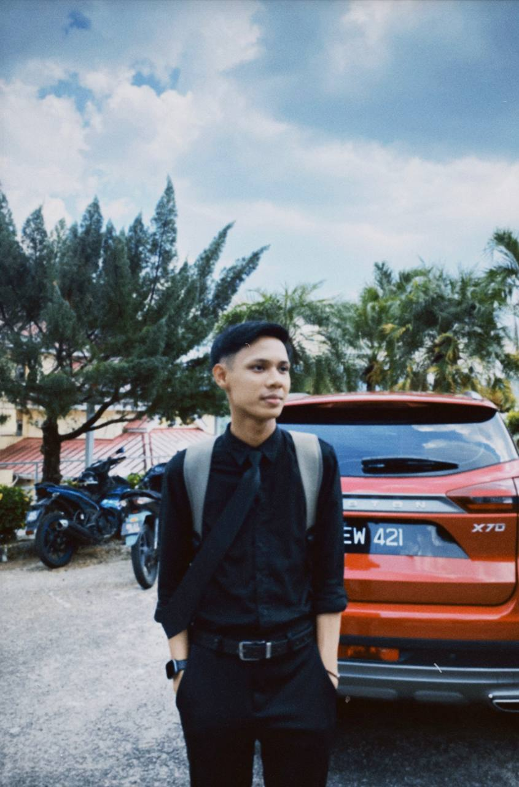
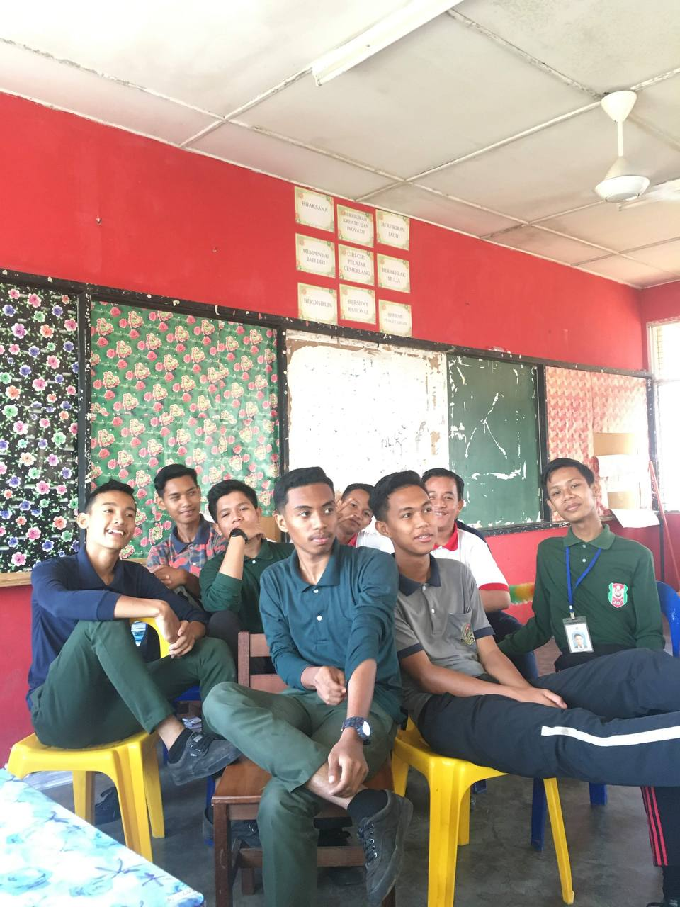
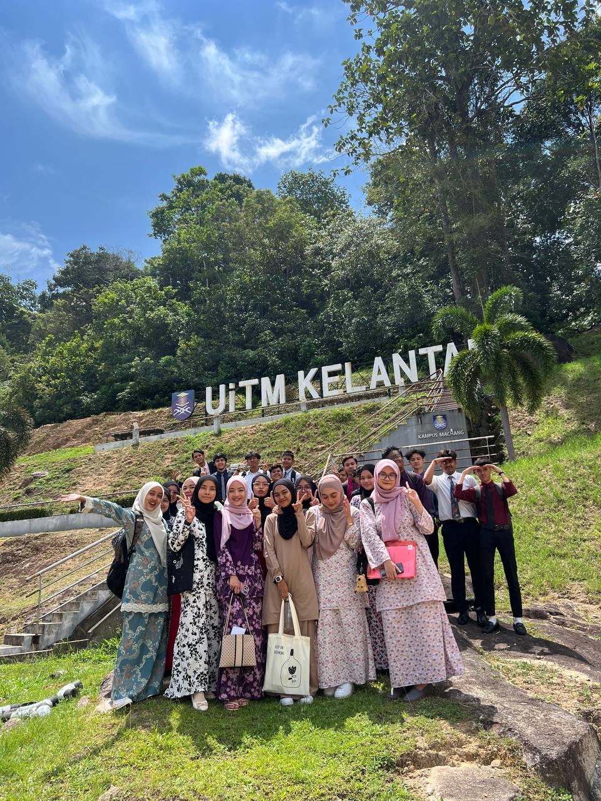

This is My Education Journey
My School History
- 2008 - 2010
- Tadika Harapanku, Koklanas Kelantan
- 2011 - 2016
- SK Pangkal Kalong, Ketereh Kelantan
- 2017 - 2021
- SMK Pangkal Kalong, Ketereh Kelantan
- 2022 - Now
- UiTM Machang Branch, Kelantan
Experience and Achievements
- Represented the school in district-level volleyball during secondary school
- Library prefect during primary school
- School prefect during secondary school
- Achieved 3As, 3Bs, and 3Cs in PT3
- Worked at McDonald's while waiting for UPU results before entering Diploma UiTM
- Represented the school in a camping program during secondary school
Pictures from School and University Life


